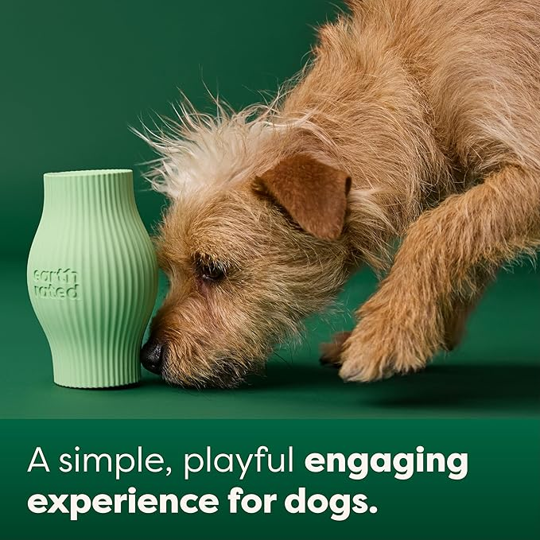
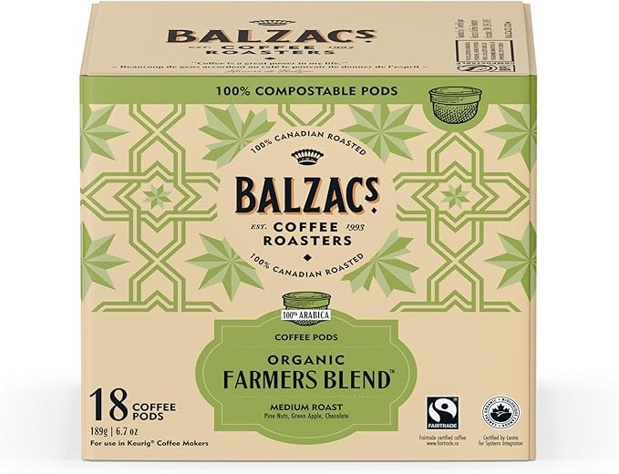
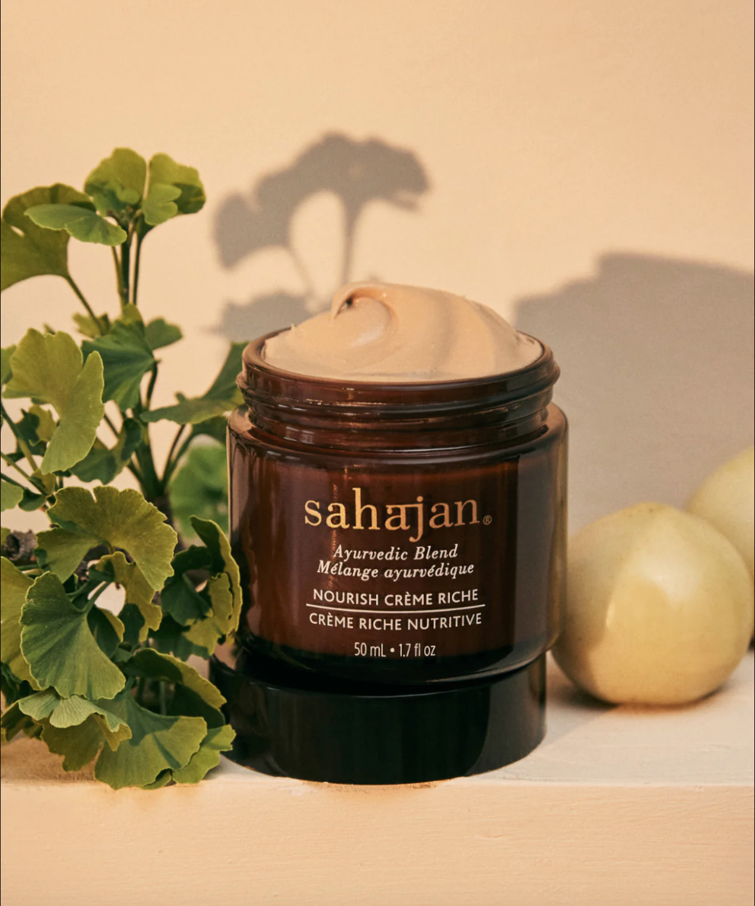
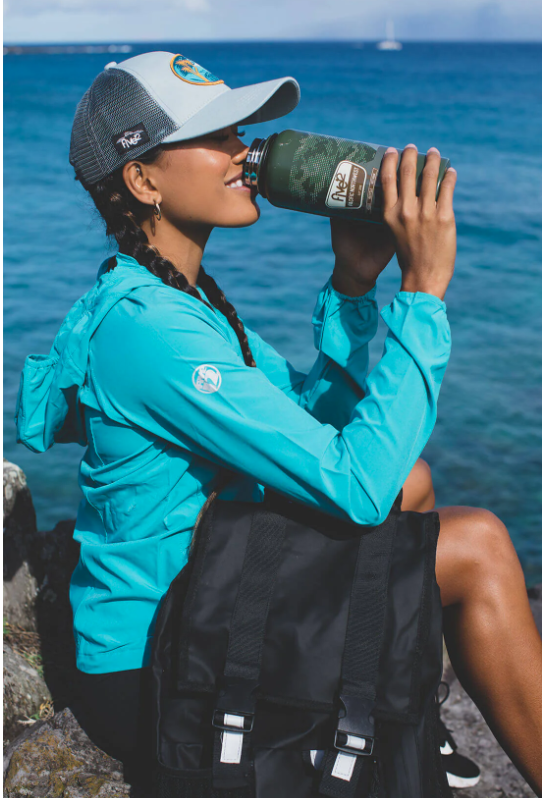
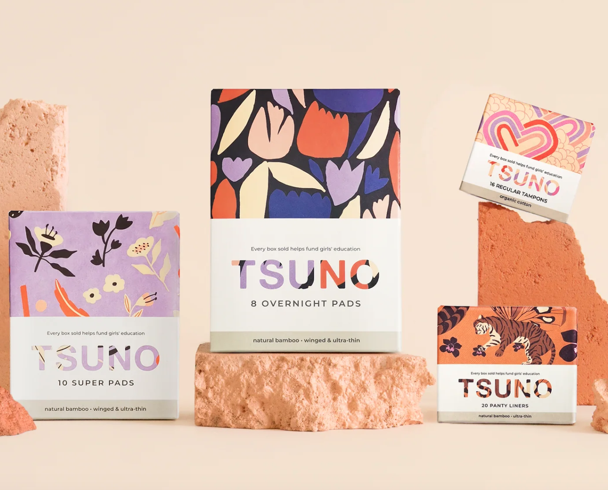
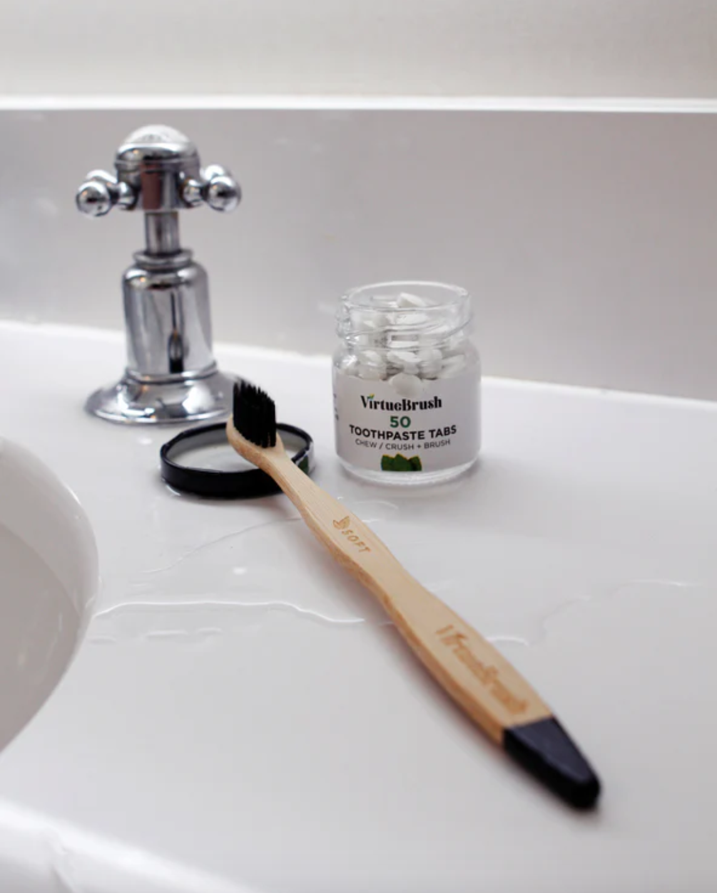
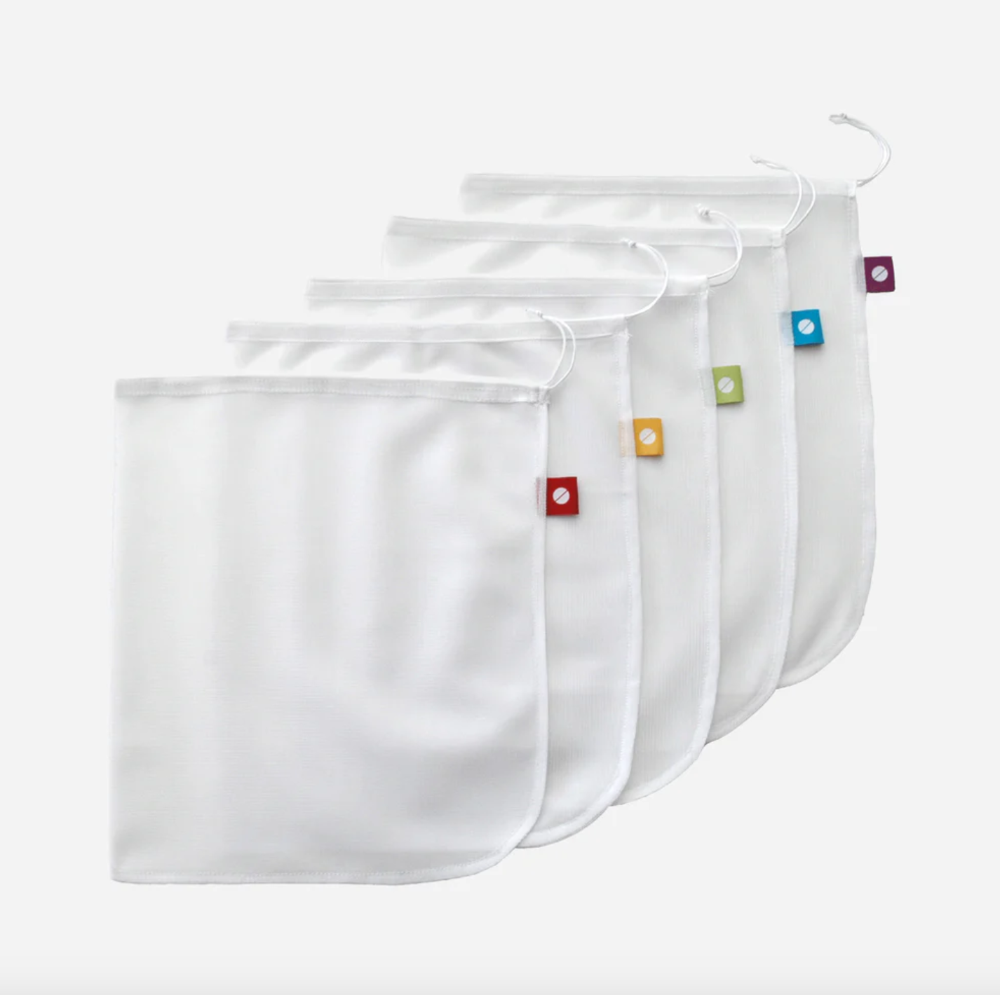
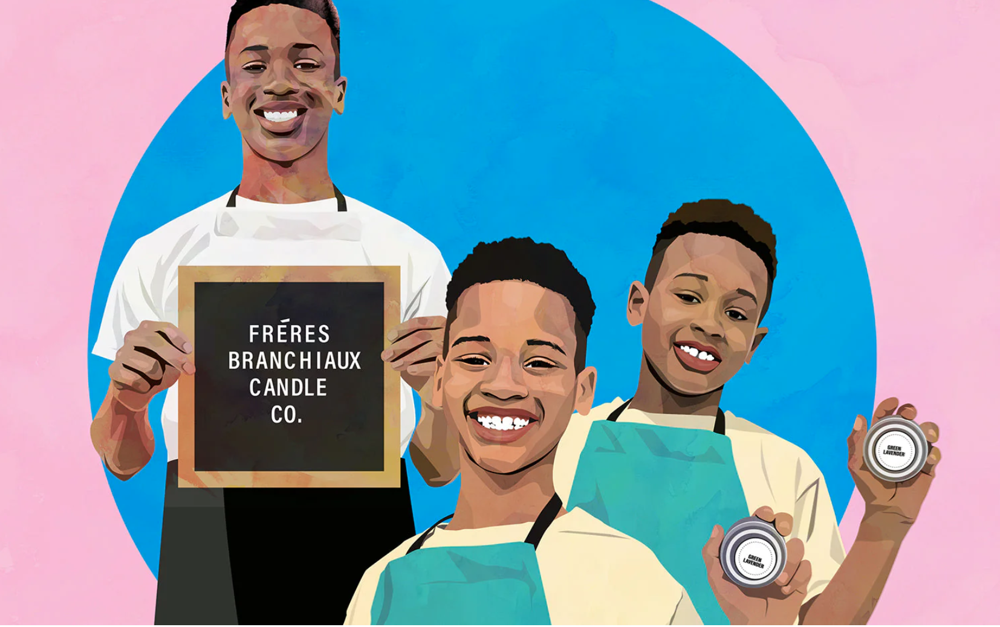
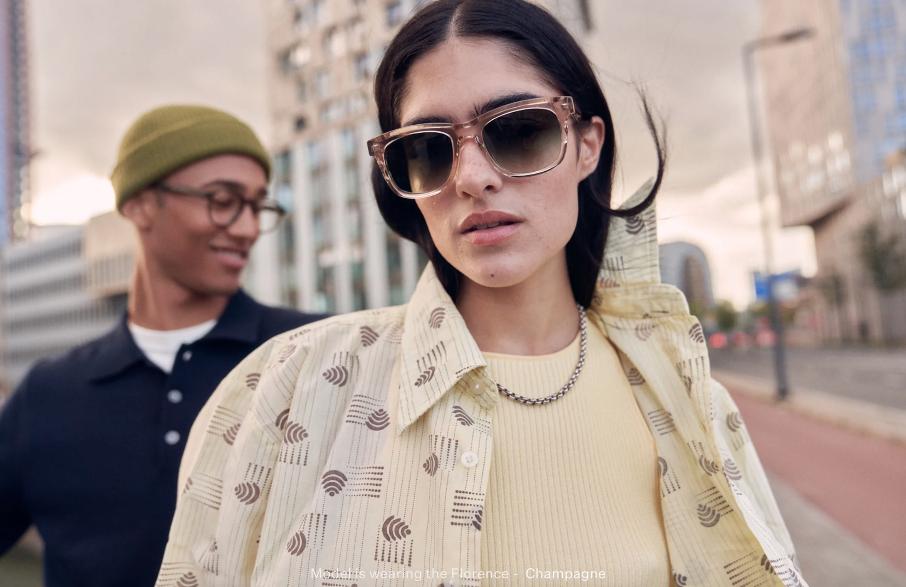
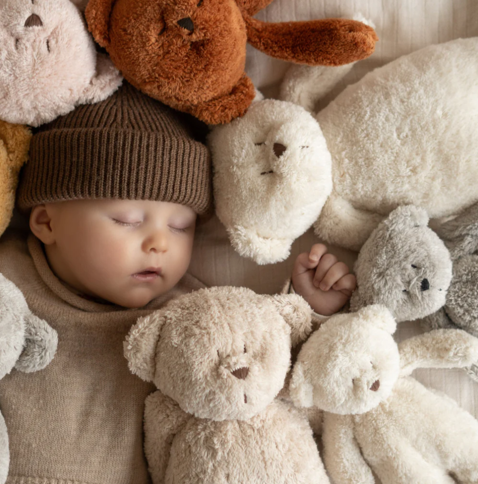

🌱 Shop Green, Live Clean
Small swaps, big impact—make every purchase a step toward sustainability. Sustainable
Yours understands the struggle that comes with finding eco-friendly products, so we’ve found
a solution. Here are some amazing sustainable products we found just for you.
| 1.  |
Earth Rated Treat Dispensing Dog ToyTREAT YOUR DOG: Our treat dispenser is a |
| 2.  |
Balzac's Sustainable Coffee Roasters – Farmers’ Blend
Hearty, country morning brisk, with a clean acidity...And did we mention SUSTAINABLE? |
| 3.  |
Nourish Creme Riche
Restore essential hydration while feeding |
| 4.  |
Five12 Sustainable Activewear
Five12 is a performance-wear brand dedicated to sustainability, |
| 5.  |
Tsuno Sustainble Menstral Products
Tsuno offers a sustainable approach to tampons and personal care products, |
| 6.  |
Virtue Brush Sustainable Dental Care
VirtueBrush reduces plastic waste by creating hairbrushes |
| 7.  |
Flip & Tumble
Flip & Tumble offers reusable, eco-friendly alternatives |
| 8.  |
Frères Branchiaux Candles
Frères Branchiaux, founded by three young brothers with their |
| 9.  |
Sustainable Made Eyewear
Dick Moby brings sustainability to everyday eyewear with a collection |
| 10.  |
Concious Crafts - Eco-friendly Crafts for the Kids
Conscious Craft inspires creative play and a love for nature with |